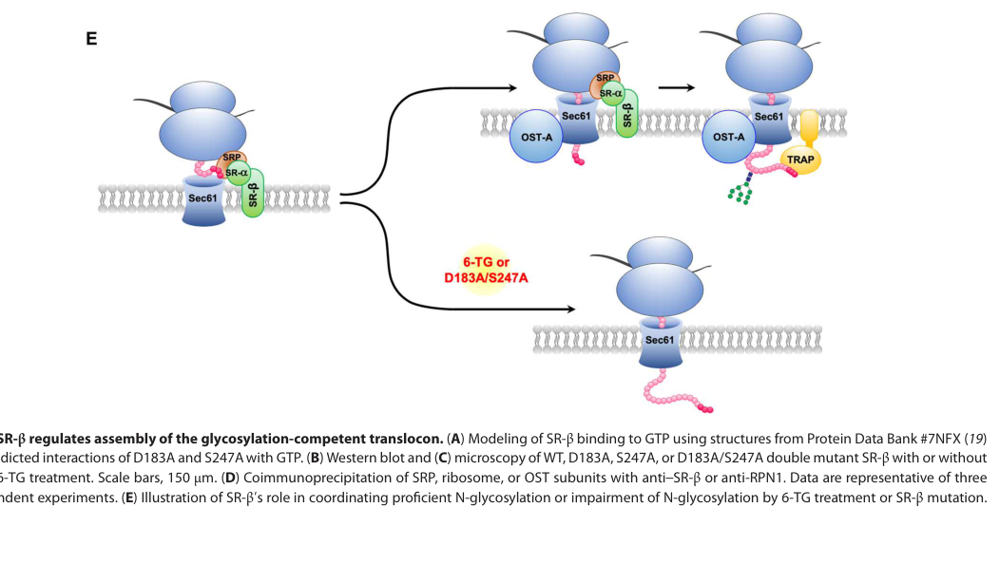

SRPRB (signal recognition particle receptor subunit beta, SR-beta; also APMCF1) is a 271 aa single-pass ER membrane protein and a small Ras-superfamily GTPase closely related to Arf and Sar1. It is the membrane-anchored beta subunit of the heterodimeric signal recognition particle (SRP) receptor (SR), assembling with the soluble alpha subunit SRPRA via a Longin-domain interface and tethering SRPRA to the ER membrane. The SRP receptor docks the SRP-ribosome-nascent chain complex at the ER so that signal-sequence-bearing nascent secretory and membrane proteins are delivered to the Sec61 translocon for cotranslational translocation and insertion. SRP-dependent targeting is driven by a GTPase cycle in which the SR (SRPRA and SRPRB) and the SRP54 GTPase reciprocally activate one another; GTP binding and hydrolysis by SRPRB regulate ribosome-nascent chain handover and receptor recycling. SRPRB is broadly expressed and localizes to the ER membrane.
| GO Term | Evidence | Action | Reason |
|---|---|---|---|
|
GO:0005785
signal recognition particle receptor complex
|
IBA
GO_REF:0000033 |
ACCEPT |
Summary: SRPRB is the beta subunit of the heterodimeric SRP receptor; phylogenetic assignment of SR-complex membership is consistent with direct structural and biochemical evidence. Core structural identity.
Reason: SRP receptor complex membership is the core cellular-component identity of SRPRB; SRPRB heterodimerizes with SRPRA.
Supporting Evidence:
file:human/SRPRB/SRPRB-uniprot.txt
Component of the signal recognition particle (SRP) complex receptor (SR)
|
|
GO:0045047
protein targeting to ER
|
IBA
GO_REF:0000033 |
ACCEPT |
Summary: As part of the SRP receptor, SRPRB participates in targeting nascent secretory/membrane proteins to the ER. Core biological process.
Reason: Core SR-mediated process; the SRP receptor ensures correct targeting of nascent proteins to the ER membrane.
Supporting Evidence:
file:human/SRPRB/SRPRB-uniprot.txt
the correct targeting of the nascent secretory proteins to the
|
|
GO:0005525
GTP binding
|
IEA
GO_REF:0000002 |
ACCEPT |
Summary: SRPRB is a small GTPase of the Ras superfamily (Arf/Sar1-related) with conserved GTP-binding motifs; GTP binding and hydrolysis drive the SRP-targeting cycle. Core molecular function.
Reason: Core molecular function; SRPRB binds GTP (structure solved in the Mg2+-GTP-bound state) and its GTPase activity regulates targeting.
|
|
GO:0005789
endoplasmic reticulum membrane
|
IEA
GO_REF:0000044 |
ACCEPT |
Summary: Electronic transfer of the ER membrane subcellular location from UniProt; the correct and core compartment for the membrane-anchored SR-beta subunit.
Reason: Correct core location; SRPRB is a single-pass ER membrane protein.
Supporting Evidence:
file:human/SRPRB/SRPRB-uniprot.txt
SUBCELLULAR LOCATION: Endoplasmic reticulum membrane
|
|
GO:0005515
protein binding
|
IPI
PMID:16169070 A human protein-protein interaction network: a resource for ... |
KEEP AS NON CORE |
Summary: High-throughput protein-protein interaction capture. SRPRB's functionally informative interaction is with SRPRA (the SR heterodimer), but bare protein binding is uninformative.
Reason: Real but the bare protein binding term is uninformative per curation guidelines; the SR-complex term captures the informative content.
Supporting Evidence:
file:human/SRPRB/SRPRB-uniprot.txt
Heterodimer with SRPRA
|
|
GO:0005515
protein binding
|
IPI
PMID:33961781 Dual proteome-scale networks reveal cell-specific remodeling... |
KEEP AS NON CORE |
Summary: BioPlex affinity-MS interactome capture. Bare protein binding is uninformative.
Reason: High-throughput interaction; bare protein binding is uninformative and not core.
Supporting Evidence:
file:human/SRPRB/SRPRB-uniprot.txt
Heterodimer with SRPRA
|
|
GO:0005515
protein binding
|
IPI
PMID:40205054 Multimodal cell maps as a foundation for structural and func... |
KEEP AS NON CORE |
Summary: Multimodal cell-map interactome capture. Bare protein binding is uninformative.
Reason: High-throughput interaction; bare protein binding is uninformative and not core.
Supporting Evidence:
file:human/SRPRB/SRPRB-uniprot.txt
Heterodimer with SRPRA
|
|
GO:0005785
signal recognition particle receptor complex
|
EXP
PMID:16439358 The structure of the mammalian signal recognition particle (... |
ACCEPT |
Summary: Crystal structure of mammalian SR-beta in complex with the SRalpha (SRPRA) binding domain (SRX); direct experimental evidence that SRPRB is part of the heterodimeric SRP receptor. Core structural identity.
Reason: Experimentally demonstrated core SR membership; SRPRB-SRPRA heterodimer structure.
Supporting Evidence:
PMID:16439358
The SR is a heterodimeric complex assembled by the two GTPases SRalpha and SRbeta
|
|
GO:0006617
SRP-dependent cotranslational protein targeting to membrane, signal sequence recognition
|
NAS
PMID:16439358 The structure of the mammalian signal recognition particle (... |
ACCEPT |
Summary: SRPRB, as part of the SR, participates in SRP-dependent cotranslational targeting of nascent chains to the ER membrane. Core biological process.
Reason: Core SR-mediated process; the SRP receptor mediates SRP-dependent cotranslational targeting at the ER.
Supporting Evidence:
PMID:16439358
co-translational targeting of secretory and membrane proteins to the endoplasmic reticulum
|
|
GO:0016020
membrane
|
NAS
PMID:16439358 The structure of the mammalian signal recognition particle (... |
KEEP AS NON CORE |
Summary: The SR is membrane-anchored via SRPRB; a generic membrane localization that is a parent of the specific ER membrane term.
Reason: Correct but generic; the ER membrane term captures the informative localization.
Supporting Evidence:
PMID:16439358
which is membrane-anchored
|
|
GO:0005789
endoplasmic reticulum membrane
|
ISS
GO_REF:0000024 |
ACCEPT |
Summary: Curator ISS transfer of ER membrane localization from an ortholog; the correct and core compartment for SRPRB.
Reason: Correct core location; redundant with other ER membrane evidence.
Supporting Evidence:
file:human/SRPRB/SRPRB-uniprot.txt
SUBCELLULAR LOCATION: Endoplasmic reticulum membrane
|
|
GO:0016020
membrane
|
IDA
PMID:22375059 Different effects of Sec61α, Sec62 and Sec63 depletion on tr... |
KEEP AS NON CORE |
Summary: Direct evidence of membrane localization from a study of Sec61/Sec62/Sec63-dependent ER translocation; a generic membrane term, parent of ER membrane.
Reason: Correct but generic; the ER membrane term captures the informative localization.
Supporting Evidence:
file:human/SRPRB/SRPRB-uniprot.txt
SUBCELLULAR LOCATION: Endoplasmic reticulum membrane
|
|
GO:0005789
endoplasmic reticulum membrane
|
TAS
Reactome:R-HSA-1791060 |
ACCEPT |
Summary: Reactome TAS annotation of ER membrane localization for SRPRB, consistent with the core compartment.
Reason: Correct core location; consistent with experimental and ISS evidence.
Supporting Evidence:
file:human/SRPRB/SRPRB-uniprot.txt
SUBCELLULAR LOCATION: Endoplasmic reticulum membrane
|
|
GO:0005881
cytoplasmic microtubule
|
IDA
PMID:23264731 MTR120/KIAA1383, a novel microtubule-associated protein, pro... |
REMOVE |
Summary: Wrong-gene citation. PMID:23264731 characterizes MTR120/KIAA1383 as a microtubule-associated protein; the now-cached full text never mentions or assays SRPRB (no occurrence of SRPRB / SR-beta / SRP receptor). SRPRB is an ER-membrane GTPase, for which a cytoplasmic microtubule localization is biologically implausible.
Reason: The full text of PMID:23264731 is now available and confirms the paper is entirely about MTR120/KIAA1383 and does not assay SRPRB, so this GO:0005881 IDA is a wrong-gene mis-attribution. This matches the sibling SERP1 review, where the same PMID:23264731 cytoplasmic-microtubule annotation was REMOVED after full-text confirmation; previously this row was held UNDECIDED only because the full text was unavailable.
Supporting Evidence:
PMID:23264731
a novel microtubule-associated protein, promotes microtubule stability and ensures cytokinesis
|
|
GO:0005737
cytoplasm
|
IDA
PMID:19664239 Subcellular localization of APMCF1 and its biological signif... |
KEEP AS NON CORE |
Summary: GFP-APMCF1 (SRPRB) overexpression showed a generally cytoplasmic distribution in COS-7 cells. A diffuse cytoplasmic signal is consistent with an ER-membrane protein (the ER is in the cytoplasm), but cytoplasm is imprecise relative to the ER membrane and the signal derives from overexpression of a GFP fusion.
Reason: Plausible but imprecise (and overexpression-based); the informative core localization is the ER membrane.
Supporting Evidence:
PMID:19664239
EGFP-APMCF1 was generally localized in the cytoplasm of COS-7 cell
|
Q: Is the reported cytoplasmic-microtubule localization of SRPRB a genuine secondary localization or a mis-attribution from the MTR120 study, and does SRPRB have any verified function outside the SRP receptor?
Q: How do the GTPase cycles of SRPRB, SRPRA, and SRP54 coordinate ribosome-nascent chain handover to the Sec61 translocon, and what is the specific catalytic contribution of SRPRB GTP hydrolysis?
Experiment: Use endogenous tagging plus proximity labeling and super-resolution microscopy to test whether SRPRB localizes to microtubules under any condition, distinguishing genuine localization from overexpression or co-purification artifacts.
Experiment: Reconstitute SRP-dependent targeting with wild-type and GTPase-dead SRPRB to quantify the role of SRPRB GTP hydrolysis in receptor recycling and nascent-chain delivery to Sec61.
The research report should be a detailed narrative explaining the function, biological processes, and localization of the gene product. Citations should be given for all claims.
You should prioritize authoritative reviews and primary scientific literature when conducting research. You can supplement
this with annotations you find in gene/protein databases, but these can be outdated or inaccurate.
We are specifically interested in the primary function of the gene - for enzymes, what reaction is catalyzed, and what is the substrate specificity? For transporters, what is the substrate? For structural proteins or adapters, what is the broader structural role? For signaling molecules, what is the role in the pathway.
We are interested in where in or outside the cell the gene product carries out its function.
We are also interested in the signaling or biochemical pathways in which the gene functions. We are less interested in broad pleiotropic effects, except where these elucidate the precise role.
Include evidence where possible. We are interested in both experimental evidence as well as inference from structure, evolution, or bioinformatic analysis. Precise studies should be prioritized over high-throughput, where available.
The gene symbol SRPRB in Homo sapiens encodes Signal Recognition Particle (SRP) receptor subunit beta (SRβ), an integral endoplasmic reticulum (ER) membrane protein and the membrane-anchoring subunit of the heterodimeric SRP receptor (SRα/SRβ). This matches the UniProt Q9Y5M8 description provided (SRP receptor subunit beta; SR-β; APMCF1). Experimental work describing SRβ as the transmembrane GTPase subunit that anchors SRα to the ER and binds GTP specifically is consistent with the expected domain/family assignment (P-loop NTPase/small GTPase-like). (miller1995thebetasubunit pages 1-2, miller1995thebetasubunit pages 6-7)
A recent human genetics/cell biology study explicitly refers to SRPRB as encoding the “membrane anchoring subunit” of the SRP receptor, with CRISPR knockout of SRPRB disrupting SRα stability and ER localization—directly aligning the symbol SRPRB with the SRβ protein identity in human cells. (child2023examiningsrppathway pages 2-4)
The SRP pathway mediates cotranslational targeting of a large fraction of secretory and membrane proteins to the ER. In this process, SRP binds emerging signal sequences on ribosome–nascent chain complexes and delivers them to the ER-localized SRP receptor (SR), enabling transfer to the protein translocation machinery (e.g., Sec61). The SRP receptor is a heterodimer of SRα (peripheral membrane GTPase) and SRβ (integral membrane GTPase). (miller1995thebetasubunit pages 1-2)
SRβ is best understood as:
- An ER membrane anchor for SRα (maintaining SRα at the ER surface). (miller1995thebetasubunit pages 1-2, child2023examiningsrppathway pages 2-4)
- A GTP-binding transmembrane small GTPase with canonical GTPase motifs in its cytosolic domain. (miller1995thebetasubunit pages 6-7, miller1995thebetasubunit pages 7-9)
- A structural/mechanistic component of the targeting complex that helps organize the SRP–SR GTPase cycle on the ribosome and (as shown recently) helps coordinate downstream ER cotranslational processing events such as N-glycosylation. (kobayashi2018structureofa pages 1-3, phoomak2023signalrecognitionparticle pages 1-2)
Classic biochemical characterization established SRβ as an integral membrane protein with a single signal-anchor transmembrane segment (no cleaved signal peptide) and a cytosolic GTPase domain, consistent with function on the cytosolic face of the ER where ribosomes dock. (miller1995thebetasubunit pages 6-7, miller1995thebetasubunit pages 5-6)
SRβ belongs to the GTPase superfamily and forms a distinct subgroup distantly related to ARF/Sar1-like small GTPases; it binds GTP specifically in UV crosslinking assays, supporting its functional classification as a GTP-binding protein. (miller1995thebetasubunit pages 1-2, miller1995thebetasubunit pages 7-9)
SRα behaves as a peripheral membrane protein, and SRβ mediates stable membrane association of SRα. This anchoring is not merely structural: SRβ’s nucleotide-binding domain suggested (even in early work) an additional regulated role in targeting/translocation. (miller1995thebetasubunit pages 1-2, miller1995thebetasubunit pages 6-7)
Direct evidence in human cells shows that loss of SRPRB (SRβ) destabilizes SRα and causes cytosolic redistribution of residual SRα, while re-expression of SRβ restores SRα abundance and ER localization. (child2023examiningsrppathway pages 2-4)
A cryo-EM structure of a prehandover mammalian ribosomal SRP·SR targeting complex places SRβ as an ER-integrated, eukaryote-specific SRP receptor component with GTP bound. In this structure, the SRα NG domain contacts the SRβ-bound GTP, and SRβ (together with SRP68 elements) helps form a platform that docks/stabilizes the NG heterodimer at the distal SRP RNA site to enable subsequent handover steps. (kobayashi2018structureofa pages 1-3)
Follow-on mechanistic work supports a model in which SRP-mediated targeting requires sequential conformational rearrangements driven by the SRP/SR GTPase cycle, including receptor compaction and GTPase rearrangement to transition from cargo recognition near the ribosome exit tunnel to a distal state compatible with translocon engagement. In this framework, SRβ is part of the membrane-proximal SR architecture that enables these rearrangements at the ER. (lee2021receptorcompactionand pages 1-2, lee2021receptorcompactionand pages 2-3)
A 2023 Science Advances study provided direct evidence for a previously underappreciated function of SRβ: SRβ is required for assembly of an N-glycosylation–competent translocon and thereby coordinates cotranslational translation/translocation with N-glycosylation. Perturbation of SRβ’s GTP-binding site (mutation) or small-molecule guanine analog probes produced a hypoglycosylation phenotype without disrupting SRα–SRβ association, but reduced SRβ association with the oligosaccharyltransferase (OST) complex, linking SRβ activity to OST recruitment/engagement. (phoomak2023signalrecognitionparticle pages 1-2)
A mechanistic schematic from the same study summarizes this model: SRβ promotes recruitment/assembly of OST with the ribosome–Sec61 translocon to create a glycosylation-competent supercomplex, whereas SRβ perturbation prevents proper OST engagement and results in hypoglycosylation. (phoomak2023signalrecognitionparticle media 4ab7387b)
A 2023 RNA study used CRISPR/Cas9 to generate SRPRB knockout lines and found that, although SRβ loss profoundly destabilizes SRα, steady-state ER localization patterns of mRNAs were largely unaltered in their assays, arguing that ER mRNA localization can be uncoupled from SRP receptor expression under tested conditions. This refines (and complicates) common assumptions that SR is strictly required for ER mRNA localization. (child2023examiningsrppathway pages 2-4)
In 2024 literature retrieved here, SRPRB often appears in gene signatures (e.g., cancer prognostic models, extracellular vesicle proteomics, epigenetic review examples) rather than as a deeply validated causal driver; these contexts can be hypothesis-generating but typically do not supersede the experimentally defined SRβ function in ER targeting and cotranslational processing. (OpenTargets Search: -SRPRB)
In SRPRB knockout cells, mutant SRPRB transcript levels were reported at ~50–80% of parental and showed reduced engagement with heavy polysomes (shift from fractions 13–18 to fractions 8–10), consistent with nonsense-mediated decay/translation effects. Proteasome inhibition (MG132) for 16 hours increased SRα levels in SRβ-deficient cells, supporting proteasome-mediated SRα turnover when SRβ is absent. (child2023examiningsrppathway pages 2-4)
In the SRβ–glycosylation coordination study:
- A high-throughput screen of 361,103 small molecules identified guanine analog activity (including 6-thioguanine) associated with glycosylation defects. (phoomak2023signalrecognitionparticle pages 1-2)
- Glycoproteomic analysis identified 796 acceptor sequons; 244 showed >25% reduction in glycan occupancy and 95 showed >50% reduction after treatment. (phoomak2023signalrecognitionparticle pages 2-3)
- Comparison with a direct OST inhibitor (NGI-1) suggested only partial overlap: among 617 sequons quantified in both datasets, only ~50% of strongly affected sites by one condition matched the other, consistent with a mechanism distinct from simple OST inhibition and implicating cotranslational/translocon coordination. (phoomak2023signalrecognitionparticle pages 2-3)
The 2023 identification of guanine-analog probes that induce SRβ-linked hypoglycosylation provides a practical chemical perturbation strategy to interrogate how cotranslational targeting interfaces with glycosylation and translocon assembly. This is directly applicable to studies of secretory pathway quality control and glycoprotein biogenesis. (phoomak2023signalrecognitionparticle pages 1-2, phoomak2023signalrecognitionparticle pages 2-3)
SRPRB knockout cell lines (and complementary SRα suppression approaches) provide real-world cellular systems for separating SR-dependent protein targeting functions from SR-independent ER mRNA localization phenomena, enabling mechanistic dissection of ER-associated translation biology. (child2023examiningsrppathway pages 2-4)
Open Targets lists modest associations between SRPRB and several disease terms (e.g., neurodegenerative disease) derived largely from functional screening evidence (CRISPRi/CRISPRa survival screens). These data are useful for hypothesis generation and prioritization but should be interpreted cautiously because they do not, by themselves, establish SRPRB as a well-validated monogenic disease gene or therapeutic target. (OpenTargets Search: -SRPRB)
Core, highest-confidence function: SRPRB encodes SRβ, an ER-integrated GTP-binding receptor subunit essential for stable SRα association with the ER and for canonical SRP-mediated cotranslational targeting. This is supported by foundational biochemical work and reinforced by direct human knockout phenotypes. (miller1995thebetasubunit pages 1-2, child2023examiningsrppathway pages 2-4)
Mechanistic refinement from structures: Cryo-EM places SRβ as an organizing element in eukaryotic targeting intermediates; GTP-bound SRβ interacts with SRα domain architecture to stabilize/dock the SRP–SR NG heterodimer for handover steps, with evidence that SRβ may not hydrolyze GTP in at least one prehandover conformation. (kobayashi2018structureofa pages 1-3)
Major 2023 advance: SRβ is not only an anchor; it can coordinate assembly of a glycosylation-competent translocon by modulating association with OST, providing a direct mechanistic bridge between targeting and a key cotranslational modification (N-glycosylation). This expands functional annotation of SRPRB into cotranslational processing beyond simple targeting. (phoomak2023signalrecognitionparticle pages 1-2, phoomak2023signalrecognitionparticle media 4ab7387b)
Limits of current evidence: Many 2024 mentions of SRPRB occur in omics signatures or association resources; these do not yet replace direct mechanistic studies as the basis for functional annotation. (OpenTargets Search: -SRPRB)
| Category | Evidence summary | Key citations (pqac IDs) | Publication(s) + date + URL |
|---|---|---|---|
| Identity | Human SRPRB matches UniProt Q9Y5M8 and encodes signal recognition particle receptor subunit beta (SRβ), also called the membrane-anchoring subunit of the heterodimeric SRP receptor. Loss of SRPRB destabilizes SRα and redistributes residual SRα to the cytosol, confirming the specific SRα/SRβ receptor identity in human cells. | (miller1995thebetasubunit pages 1-2, child2023examiningsrppathway pages 2-4) | Miller et al., J Cell Biol (Feb 1995), https://doi.org/10.1083/jcb.128.3.273; Child et al., RNA (Aug 2023), https://doi.org/10.1261/rna.079643.123 |
| Domains | SRβ is an integral membrane small GTPase with a single transmembrane signal-anchor and a cytosolic GTP-binding domain containing canonical GTPase motifs; it defines a distinct SRβ subfamily related to ARF/Sar1-like small GTPases. Structural work further places a GTP molecule bound to SRβ within the mammalian targeting complex. | (miller1995thebetasubunit pages 6-7, miller1995thebetasubunit pages 7-9, kobayashi2018structureofa pages 7-9) | Miller et al., J Cell Biol (Feb 1995), https://doi.org/10.1083/jcb.128.3.273; Kobayashi et al., Science (Apr 2018), https://doi.org/10.1126/science.aar7924 |
| Localization | SRβ localizes to the endoplasmic reticulum membrane as the membrane-integrated subunit of the SRP receptor, with its GTPase domain on the cytosolic face. Complementation of SRPRB knockout restores SRα localization to the ER, reinforcing ER residency of the functional complex. | (miller1995thebetasubunit pages 6-7, miller1995thebetasubunit pages 5-6, child2023examiningsrppathway pages 2-4) | Miller et al., J Cell Biol (Feb 1995), https://doi.org/10.1083/jcb.128.3.273; Child et al., RNA (Aug 2023), https://doi.org/10.1261/rna.079643.123 |
| Complexes/partners | Major partners are SRα (SRPRA), SRP54/SRP, the ribosome-nascent chain complex, and functionally the Sec61 translocon. Recent work adds the oligosaccharyltransferase (OST) complex as an SRβ-associated partner needed for a glycosylation-competent translocon. Cryo-EM places SRβ together with SRP68 in a platform that docks the NG heterodimer at the distal SRP RNA site. | (phoomak2023signalrecognitionparticle pages 1-2, kobayashi2018structureofa pages 1-3, kobayashi2018structureofa pages 3-5, phoomak2023signalrecognitionparticle media 4ab7387b) | Kobayashi et al., Science (Apr 2018), https://doi.org/10.1126/science.aar7924; Phoomak et al., Sci Adv (Mar 2023), https://doi.org/10.1126/sciadv.ade8079 |
| Core molecular function | SRβ’s core role is to anchor and organize the SRP receptor at the ER during co-translational targeting of secretory and membrane proteins. Beyond anchoring, its GTP-bound state contributes to assembly/stabilization of the targeting complex and, in 2023 work, to coordination of cotranslational N-glycosylation by promoting OST engagement with the translocon. | (miller1995thebetasubunit pages 1-2, kobayashi2018structureofa pages 1-3, phoomak2023signalrecognitionparticle pages 1-2) | Miller et al., J Cell Biol (Feb 1995), https://doi.org/10.1083/jcb.128.3.273; Kobayashi et al., Science (Apr 2018), https://doi.org/10.1126/science.aar7924; Phoomak et al., Sci Adv (Mar 2023), https://doi.org/10.1126/sciadv.ade8079 |
| Key mechanistic insights | Early biochemical work showed specific GTP binding by SRβ and proposed that its nucleotide state could regulate targeting/translocation. Cryo-EM and single-molecule work later showed that eukaryotic targeting requires SR compaction and GTPase-driven rearrangements; GTP-bound SRβ contacts the SRα NG/SRX architecture and provides a eukaryote-specific stabilizing effect that helps dock the targeting complex for signal-sequence handover. Notably, the 2018 structure suggested SRβ may remain GTP-bound without hydrolysis in that prehandover state. | (miller1995thebetasubunit pages 7-9, kobayashi2018structureofa pages 1-3, kobayashi2018structureofa pages 3-5, lee2021receptorcompactionand pages 1-2, lee2021receptorcompactionand pages 2-3) | Miller et al., J Cell Biol (Feb 1995), https://doi.org/10.1083/jcb.128.3.273; Kobayashi et al., Science (Apr 2018), https://doi.org/10.1126/science.aar7924; Lee et al., Sci Adv (May 2021), https://doi.org/10.1126/sciadv.abg0942 |
| Phenotypes/perturbations | SRPRB knockout in human cells causes profound destabilization of SRα, proteasome-sensitive SRα loss, and cytosolic redistribution of residual SRα, but surprisingly leaves bulk steady-state ER/cytosol mRNA partitioning largely unchanged. Chemical or mutational perturbation of the SRβ GTP-binding site causes an N-glycosylation-deficient phenotype and reduces SRβ association with OST without disrupting SRα-SRβ association. | (child2023examiningsrppathway pages 2-4, phoomak2023signalrecognitionparticle pages 1-2) | Child et al., RNA (Aug 2023), https://doi.org/10.1261/rna.079643.123; Phoomak et al., Sci Adv (Mar 2023), https://doi.org/10.1126/sciadv.ade8079 |
| Recent (2023-2024) developments | In 2023, SRPRB was shown to have a previously underappreciated role in assembling an N-glycosylation-competent translocon and coordinating cotranslational N-glycosylation, expanding its function beyond receptor anchoring. Also in 2023, human SRPRB knockout experiments challenged simple models that ER mRNA localization is strictly SR-dependent. In 2024, SRPRB appears mainly in omics/association contexts rather than as a directly validated disease gene; Open Targets lists modest disease associations largely derived from functional screening evidence rather than gene-specific mechanistic human pathology. | (child2023examiningsrppathway pages 2-4, phoomak2023signalrecognitionparticle pages 1-2, phoomak2023signalrecognitionparticle pages 2-3, OpenTargets Search: -SRPRB) | Child et al., RNA (Aug 2023), https://doi.org/10.1261/rna.079643.123; Phoomak et al., Sci Adv (Mar 2023), https://doi.org/10.1126/sciadv.ade8079; Open Targets context (accessed via tool context) |
| Quantitative data points | Reported quantitative findings include: SRPRB KO transcripts at ~50–80% of parental with mutant mRNAs shifted from heavy polysomes fractions 13–18 to fractions 8–10; MG132 for 16 h increased SRα levels in KO cells. In the glycosylation study, a 361,103-compound screen identified 6-thioguanine; treatment effects were seen with 10 μM compounds and ~6 h onset; among 796 sequons, 244 showed >25% occupancy loss and 95 showed >50% loss; among 617 shared sequons, only ~50% overlapped with NGI-1-sensitive sites. | (child2023examiningsrppathway pages 2-4, phoomak2023signalrecognitionparticle pages 1-2, phoomak2023signalrecognitionparticle pages 2-3) | Child et al., RNA (Aug 2023), https://doi.org/10.1261/rna.079643.123; Phoomak et al., Sci Adv (Mar 2023), https://doi.org/10.1126/sciadv.ade8079 |
| OpenTargets association context | Open Targets lists low-to-moderate association scores between SRPRB and several diseases (for example neurodegenerative disease score 0.5463) based on 5 evidence items tied to CRISPRi/CRISPRa survival screens (literature PMID 34031600). These are useful hypothesis-generating links but do not currently establish SRPRB as a well-validated monogenic disease gene. | (OpenTargets Search: -SRPRB) | Open Targets platform context for SRPRB associations (tool-derived evidence context) |
Table: This table summarizes the best-supported functional annotation for human SRPRB/SRβ, integrating classic biochemistry, structural studies, and recent 2023 findings. It is useful for distinguishing the core ER-targeting role of SRβ from newer evidence linking it to cotranslational N-glycosylation and from weaker disease-association signals.
References
(miller1995thebetasubunit pages 1-2): Joshua D. Miller, S. Tajima, L. Lauffer, and P. Walter. The beta subunit of the signal recognition particle receptor is a transmembrane gtpase that anchors the alpha subunit, a peripheral membrane gtpase, to the endoplasmic reticulum membrane. The Journal of cell biology, 128:273-282, Feb 1995. URL: https://doi.org/10.1083/jcb.128.3.273, doi:10.1083/jcb.128.3.273. This article has 167 citations.
(miller1995thebetasubunit pages 6-7): Joshua D. Miller, S. Tajima, L. Lauffer, and P. Walter. The beta subunit of the signal recognition particle receptor is a transmembrane gtpase that anchors the alpha subunit, a peripheral membrane gtpase, to the endoplasmic reticulum membrane. The Journal of cell biology, 128:273-282, Feb 1995. URL: https://doi.org/10.1083/jcb.128.3.273, doi:10.1083/jcb.128.3.273. This article has 167 citations.
(child2023examiningsrppathway pages 2-4): Jessica R. Child, Alex C. Hofler, Qiang Chen, Brenda H. Yang, JohnCarlo Kristofich, Tianli Zheng, Molly M. Hannigan, Andrew L. Elles, David W. Reid, and Christopher V. Nicchitta. Examining srp pathway function in mrna localization to the endoplasmic reticulum. RNA, 29:1703-1724, Aug 2023. URL: https://doi.org/10.1261/rna.079643.123, doi:10.1261/rna.079643.123. This article has 13 citations and is from a domain leading peer-reviewed journal.
(miller1995thebetasubunit pages 7-9): Joshua D. Miller, S. Tajima, L. Lauffer, and P. Walter. The beta subunit of the signal recognition particle receptor is a transmembrane gtpase that anchors the alpha subunit, a peripheral membrane gtpase, to the endoplasmic reticulum membrane. The Journal of cell biology, 128:273-282, Feb 1995. URL: https://doi.org/10.1083/jcb.128.3.273, doi:10.1083/jcb.128.3.273. This article has 167 citations.
(kobayashi2018structureofa pages 1-3): Kan Kobayashi, Ahmad Jomaa, Jae Ho Lee, Sowmya Chandrasekar, Daniel Boehringer, Shu-ou Shan, and Nenad Ban. Structure of a prehandover mammalian ribosomal srp·srp receptor targeting complex. Science, 360:323-327, Apr 2018. URL: https://doi.org/10.1126/science.aar7924, doi:10.1126/science.aar7924. This article has 74 citations and is from a highest quality peer-reviewed journal.
(phoomak2023signalrecognitionparticle pages 1-2): Chatchai Phoomak, Natalie Rinis, Marta Baro, Shiteshu Shrimal, Daniel Bennett, Scott A. Shaffer, Mark Lehrman, Reid Gilmore, and Joseph N. Contessa. Signal recognition particle receptor-β (sr-β) coordinates cotranslational n-glycosylation. Science Advances, Mar 2023. URL: https://doi.org/10.1126/sciadv.ade8079, doi:10.1126/sciadv.ade8079. This article has 6 citations and is from a highest quality peer-reviewed journal.
(miller1995thebetasubunit pages 5-6): Joshua D. Miller, S. Tajima, L. Lauffer, and P. Walter. The beta subunit of the signal recognition particle receptor is a transmembrane gtpase that anchors the alpha subunit, a peripheral membrane gtpase, to the endoplasmic reticulum membrane. The Journal of cell biology, 128:273-282, Feb 1995. URL: https://doi.org/10.1083/jcb.128.3.273, doi:10.1083/jcb.128.3.273. This article has 167 citations.
(lee2021receptorcompactionand pages 1-2): Jae Ho Lee, Ahmad Jomaa, SangYoon Chung, Yu-Hsien Hwang Fu, Ruilin Qian, Xuemeng Sun, Hao-Hsuan Hsieh, Sowmya Chandrasekar, Xiaotian Bi, Simone Mattei, Daniel Boehringer, Shimon Weiss, Nenad Ban, and Shu-ou Shan. Receptor compaction and gtpase rearrangement drive srp-mediated cotranslational protein translocation into the er. May 2021. URL: https://doi.org/10.1126/sciadv.abg0942, doi:10.1126/sciadv.abg0942. This article has 27 citations and is from a highest quality peer-reviewed journal.
(lee2021receptorcompactionand pages 2-3): Jae Ho Lee, Ahmad Jomaa, SangYoon Chung, Yu-Hsien Hwang Fu, Ruilin Qian, Xuemeng Sun, Hao-Hsuan Hsieh, Sowmya Chandrasekar, Xiaotian Bi, Simone Mattei, Daniel Boehringer, Shimon Weiss, Nenad Ban, and Shu-ou Shan. Receptor compaction and gtpase rearrangement drive srp-mediated cotranslational protein translocation into the er. May 2021. URL: https://doi.org/10.1126/sciadv.abg0942, doi:10.1126/sciadv.abg0942. This article has 27 citations and is from a highest quality peer-reviewed journal.
(phoomak2023signalrecognitionparticle media 4ab7387b): Chatchai Phoomak, Natalie Rinis, Marta Baro, Shiteshu Shrimal, Daniel Bennett, Scott A. Shaffer, Mark Lehrman, Reid Gilmore, and Joseph N. Contessa. Signal recognition particle receptor-β (sr-β) coordinates cotranslational n-glycosylation. Science Advances, Mar 2023. URL: https://doi.org/10.1126/sciadv.ade8079, doi:10.1126/sciadv.ade8079. This article has 6 citations and is from a highest quality peer-reviewed journal.
(OpenTargets Search: -SRPRB): Open Targets Query (-SRPRB, 5 results). Buniello, A. et al. (2025). Open Targets Platform: facilitating therapeutic hypotheses building in drug discovery. Nucleic Acids Research.
(phoomak2023signalrecognitionparticle pages 2-3): Chatchai Phoomak, Natalie Rinis, Marta Baro, Shiteshu Shrimal, Daniel Bennett, Scott A. Shaffer, Mark Lehrman, Reid Gilmore, and Joseph N. Contessa. Signal recognition particle receptor-β (sr-β) coordinates cotranslational n-glycosylation. Science Advances, Mar 2023. URL: https://doi.org/10.1126/sciadv.ade8079, doi:10.1126/sciadv.ade8079. This article has 6 citations and is from a highest quality peer-reviewed journal.
(kobayashi2018structureofa pages 7-9): Kan Kobayashi, Ahmad Jomaa, Jae Ho Lee, Sowmya Chandrasekar, Daniel Boehringer, Shu-ou Shan, and Nenad Ban. Structure of a prehandover mammalian ribosomal srp·srp receptor targeting complex. Science, 360:323-327, Apr 2018. URL: https://doi.org/10.1126/science.aar7924, doi:10.1126/science.aar7924. This article has 74 citations and is from a highest quality peer-reviewed journal.
(kobayashi2018structureofa pages 3-5): Kan Kobayashi, Ahmad Jomaa, Jae Ho Lee, Sowmya Chandrasekar, Daniel Boehringer, Shu-ou Shan, and Nenad Ban. Structure of a prehandover mammalian ribosomal srp·srp receptor targeting complex. Science, 360:323-327, Apr 2018. URL: https://doi.org/10.1126/science.aar7924, doi:10.1126/science.aar7924. This article has 74 citations and is from a highest quality peer-reviewed journal.

SRPRB is the beta subunit of the signal recognition particle receptor (SR), a heterodimeric ER-membrane
complex (SRalpha = SRPRA + SRbeta = SRPRB). SRbeta is a small Ras-superfamily GTPase (closely related to
Arf/Sar1) that is membrane-anchored via a single N-terminal transmembrane helix and tethers the
soluble SRalpha to the ER membrane. The SR docks the SRP-ribosome-nascent chain complex at the ER so
that cotranslational translocation through the Sec61 channel can proceed. Also known as APMCF1.
No clearly established Mendelian disease for SRPRB (gene MIM 616883; phenotype not assigned in UniProt).
ER proteostasis|Protein transport|SRP receptor subunit ; PN-node mapping: group=mapped scope=ok_for_propagation_to_go→GO:0006614 (SRP-dependent cotranslational protein targeting to membrane); class Protein transport=mapped→GO:0015031; branch=no_mapping.This file is generated from the current PROTEOSTASIS phase-1 dossier and local gene-review artifacts. Edit the source review, PN mapping, or dossier rather than this generated note when correcting the underlying curation.
id: Q9Y5M8
gene_symbol: SRPRB
product_type: PROTEIN
status: COMPLETE
taxon:
id: NCBITaxon:9606
label: Homo sapiens
description: SRPRB (signal recognition particle receptor subunit beta, SR-beta; also APMCF1) is a 271 aa single-pass ER membrane protein and a small Ras-superfamily GTPase closely related to Arf and Sar1. It is the membrane-anchored beta subunit of the heterodimeric signal recognition particle (SRP) receptor (SR), assembling with the soluble alpha subunit SRPRA via a Longin-domain interface and tethering SRPRA to the ER membrane. The SRP receptor docks the SRP-ribosome-nascent chain complex at the ER so that signal-sequence-bearing nascent secretory and membrane proteins are delivered to the Sec61 translocon for cotranslational translocation and insertion. SRP-dependent targeting is driven by a GTPase cycle in which the SR (SRPRA and SRPRB) and the SRP54 GTPase reciprocally activate one another; GTP binding and hydrolysis by SRPRB regulate ribosome-nascent chain handover and receptor recycling. SRPRB is broadly expressed and localizes to the ER membrane.
existing_annotations:
- term:
id: GO:0005785
label: signal recognition particle receptor complex
evidence_type: IBA
original_reference_id: GO_REF:0000033
qualifier: part_of
review:
summary: SRPRB is the beta subunit of the heterodimeric SRP receptor; phylogenetic assignment of SR-complex membership is consistent with direct structural and biochemical evidence. Core structural identity.
action: ACCEPT
reason: SRP receptor complex membership is the core cellular-component identity of SRPRB; SRPRB heterodimerizes with SRPRA.
supported_by:
- reference_id: file:human/SRPRB/SRPRB-uniprot.txt
supporting_text: Component of the signal recognition particle (SRP) complex receptor (SR)
- term:
id: GO:0045047
label: protein targeting to ER
evidence_type: IBA
original_reference_id: GO_REF:0000033
qualifier: involved_in
review:
summary: As part of the SRP receptor, SRPRB participates in targeting nascent secretory/membrane proteins to the ER. Core biological process.
action: ACCEPT
reason: Core SR-mediated process; the SRP receptor ensures correct targeting of nascent proteins to the ER membrane.
supported_by:
- reference_id: file:human/SRPRB/SRPRB-uniprot.txt
supporting_text: the correct targeting of the nascent secretory proteins to the
- term:
id: GO:0005525
label: GTP binding
evidence_type: IEA
original_reference_id: GO_REF:0000002
qualifier: enables
review:
summary: SRPRB is a small GTPase of the Ras superfamily (Arf/Sar1-related) with conserved GTP-binding motifs; GTP binding and hydrolysis drive the SRP-targeting cycle. Core molecular function.
action: ACCEPT
reason: Core molecular function; SRPRB binds GTP (structure solved in the Mg2+-GTP-bound state) and its GTPase activity regulates targeting.
supported_by:
- reference_id: file:human/SRPRB/SRPRB-uniprot.txt
supporting_text: GTP-binding
- reference_id: PMID:29567807
- reference_id: PMID:34020957
- term:
id: GO:0005789
label: endoplasmic reticulum membrane
evidence_type: IEA
original_reference_id: GO_REF:0000044
qualifier: located_in
review:
summary: Electronic transfer of the ER membrane subcellular location from UniProt; the correct and core compartment for the membrane-anchored SR-beta subunit.
action: ACCEPT
reason: Correct core location; SRPRB is a single-pass ER membrane protein.
supported_by:
- reference_id: file:human/SRPRB/SRPRB-uniprot.txt
supporting_text: 'SUBCELLULAR LOCATION: Endoplasmic reticulum membrane'
- term:
id: GO:0005515
label: protein binding
evidence_type: IPI
original_reference_id: PMID:16169070
qualifier: enables
review:
summary: High-throughput protein-protein interaction capture. SRPRB's functionally informative interaction is with SRPRA (the SR heterodimer), but bare protein binding is uninformative.
action: KEEP_AS_NON_CORE
reason: Real but the bare protein binding term is uninformative per curation guidelines; the SR-complex term captures the informative content.
supported_by:
- reference_id: file:human/SRPRB/SRPRB-uniprot.txt
supporting_text: Heterodimer with SRPRA
- term:
id: GO:0005515
label: protein binding
evidence_type: IPI
original_reference_id: PMID:33961781
qualifier: enables
review:
summary: BioPlex affinity-MS interactome capture. Bare protein binding is uninformative.
action: KEEP_AS_NON_CORE
reason: High-throughput interaction; bare protein binding is uninformative and not core.
supported_by:
- reference_id: file:human/SRPRB/SRPRB-uniprot.txt
supporting_text: Heterodimer with SRPRA
- term:
id: GO:0005515
label: protein binding
evidence_type: IPI
original_reference_id: PMID:40205054
qualifier: enables
review:
summary: Multimodal cell-map interactome capture. Bare protein binding is uninformative.
action: KEEP_AS_NON_CORE
reason: High-throughput interaction; bare protein binding is uninformative and not core.
supported_by:
- reference_id: file:human/SRPRB/SRPRB-uniprot.txt
supporting_text: Heterodimer with SRPRA
- term:
id: GO:0005785
label: signal recognition particle receptor complex
evidence_type: EXP
original_reference_id: PMID:16439358
qualifier: part_of
review:
summary: Crystal structure of mammalian SR-beta in complex with the SRalpha (SRPRA) binding domain (SRX); direct experimental evidence that SRPRB is part of the heterodimeric SRP receptor. Core structural identity.
action: ACCEPT
reason: Experimentally demonstrated core SR membership; SRPRB-SRPRA heterodimer structure.
supported_by:
- reference_id: PMID:16439358
supporting_text: The SR is a heterodimeric complex assembled by the two GTPases SRalpha and SRbeta
- term:
id: GO:0006617
label: SRP-dependent cotranslational protein targeting to membrane, signal sequence recognition
evidence_type: NAS
original_reference_id: PMID:16439358
qualifier: involved_in
review:
summary: SRPRB, as part of the SR, participates in SRP-dependent cotranslational targeting of nascent chains to the ER membrane. Core biological process.
action: ACCEPT
reason: Core SR-mediated process; the SRP receptor mediates SRP-dependent cotranslational targeting at the ER.
supported_by:
- reference_id: PMID:16439358
supporting_text: co-translational targeting of secretory and membrane proteins to the endoplasmic reticulum
- term:
id: GO:0016020
label: membrane
evidence_type: NAS
original_reference_id: PMID:16439358
qualifier: located_in
review:
summary: The SR is membrane-anchored via SRPRB; a generic membrane localization that is a parent of the specific ER membrane term.
action: KEEP_AS_NON_CORE
reason: Correct but generic; the ER membrane term captures the informative localization.
supported_by:
- reference_id: PMID:16439358
supporting_text: which is membrane-anchored
- term:
id: GO:0005789
label: endoplasmic reticulum membrane
evidence_type: ISS
original_reference_id: GO_REF:0000024
qualifier: located_in
review:
summary: Curator ISS transfer of ER membrane localization from an ortholog; the correct and core compartment for SRPRB.
action: ACCEPT
reason: Correct core location; redundant with other ER membrane evidence.
supported_by:
- reference_id: file:human/SRPRB/SRPRB-uniprot.txt
supporting_text: 'SUBCELLULAR LOCATION: Endoplasmic reticulum membrane'
- term:
id: GO:0016020
label: membrane
evidence_type: IDA
original_reference_id: PMID:22375059
qualifier: located_in
review:
summary: Direct evidence of membrane localization from a study of Sec61/Sec62/Sec63-dependent ER translocation; a generic membrane term, parent of ER membrane.
action: KEEP_AS_NON_CORE
reason: Correct but generic; the ER membrane term captures the informative localization.
supported_by:
- reference_id: file:human/SRPRB/SRPRB-uniprot.txt
supporting_text: 'SUBCELLULAR LOCATION: Endoplasmic reticulum membrane'
- term:
id: GO:0005789
label: endoplasmic reticulum membrane
evidence_type: TAS
original_reference_id: Reactome:R-HSA-1791060
qualifier: located_in
review:
summary: Reactome TAS annotation of ER membrane localization for SRPRB, consistent with the core compartment.
action: ACCEPT
reason: Correct core location; consistent with experimental and ISS evidence.
supported_by:
- reference_id: file:human/SRPRB/SRPRB-uniprot.txt
supporting_text: 'SUBCELLULAR LOCATION: Endoplasmic reticulum membrane'
- term:
id: GO:0005881
label: cytoplasmic microtubule
evidence_type: IDA
original_reference_id: PMID:23264731
qualifier: located_in
review:
summary: Wrong-gene citation. PMID:23264731 characterizes MTR120/KIAA1383 as a microtubule-associated protein; the now-cached full text never mentions or assays SRPRB (no occurrence of SRPRB / SR-beta / SRP receptor). SRPRB is an ER-membrane GTPase, for which a cytoplasmic microtubule localization is biologically implausible.
action: REMOVE
reason: The full text of PMID:23264731 is now available and confirms the paper is entirely about MTR120/KIAA1383 and does not assay SRPRB, so this GO:0005881 IDA is a wrong-gene mis-attribution. This matches the sibling SERP1 review, where the same PMID:23264731 cytoplasmic-microtubule annotation was REMOVED after full-text confirmation; previously this row was held UNDECIDED only because the full text was unavailable.
supported_by:
- reference_id: PMID:23264731
supporting_text: a novel microtubule-associated protein, promotes microtubule stability and ensures cytokinesis
- term:
id: GO:0005737
label: cytoplasm
evidence_type: IDA
original_reference_id: PMID:19664239
qualifier: located_in
review:
summary: GFP-APMCF1 (SRPRB) overexpression showed a generally cytoplasmic distribution in COS-7 cells. A diffuse cytoplasmic signal is consistent with an ER-membrane protein (the ER is in the cytoplasm), but cytoplasm is imprecise relative to the ER membrane and the signal derives from overexpression of a GFP fusion.
action: KEEP_AS_NON_CORE
reason: Plausible but imprecise (and overexpression-based); the informative core localization is the ER membrane.
supported_by:
- reference_id: PMID:19664239
supporting_text: EGFP-APMCF1 was generally localized in the cytoplasm of COS-7 cell
core_functions:
- description: Membrane-anchored beta subunit of the heterodimeric signal recognition particle (SRP) receptor; a Ras-superfamily GTPase that, together with SRPRA, docks the SRP-ribosome-nascent chain complex at the ER membrane to enable SRP-dependent cotranslational protein targeting.
molecular_function:
id: GO:0005525
label: GTP binding
in_complex:
id: GO:0005785
label: signal recognition particle receptor complex
locations:
- id: GO:0005789
label: endoplasmic reticulum membrane
supported_by:
- reference_id: file:human/SRPRB/SRPRB-uniprot.txt
supporting_text: Component of the signal recognition particle (SRP) complex receptor (SR)
- reference_id: PMID:16439358
supporting_text: The SR is a heterodimeric complex assembled by the two GTPases SRalpha and SRbeta
- reference_id: PMID:29567807
- reference_id: PMID:37643813
directly_involved_in:
- id: GO:0045047
label: protein targeting to ER
- id: GO:0006617
label: SRP-dependent cotranslational protein targeting to membrane, signal sequence recognition
proposed_new_terms: []
references:
- id: GO_REF:0000002
title: Gene Ontology annotation through association of InterPro records with GO terms
findings: []
- id: GO_REF:0000024
title: Manual transfer of experimentally-verified manual GO annotation data to orthologs by curator judgment of sequence similarity
findings: []
- id: GO_REF:0000033
title: Annotation inferences using phylogenetic trees
findings: []
- id: GO_REF:0000044
title: Gene Ontology annotation based on UniProtKB/Swiss-Prot Subcellular Location vocabulary mapping, accompanied by conservative changes to GO terms applied by UniProt
findings: []
- id: PMID:16169070
title: 'A human protein-protein interaction network: a resource for annotating the proteome.'
findings: []
reference_review:
relevance: LOW
correctness: VERIFIED
review_notes: High-throughput interactome; source of an IPI protein-binding annotation.
- id: PMID:16439358
title: The structure of the mammalian signal recognition particle (SRP) receptor as prototype for the interaction of small GTPases with Longin domains.
findings:
- statement: The SR is a heterodimeric complex of the two GTPases SRalpha and SRbeta, membrane-anchored; crystal structure of mammalian SRbeta in the Mg2+-GTP-bound state in complex with the SRalpha (SRX) binding domain.
reference_section_type: ABSTRACT
reference_review:
relevance: HIGH
correctness: VERIFIED
review_notes: Structural basis for the SRPRB-SRPRA heterodimer and SRPRB GTPase identity; source of SR-complex membership and targeting annotations.
- id: PMID:19664239
title: Subcellular localization of APMCF1 and its biological significance of expression pattern in normal and malignant human tissues.
findings:
- statement: EGFP-APMCF1 (SRPRB) overexpressed in COS-7 cells localized generally to the cytoplasm.
reference_section_type: RESULTS
reference_review:
relevance: LOW
correctness: VERIFIED
review_notes: Overexpression GFP-fusion localization study under the APMCF1 alias; diffuse cytoplasmic signal consistent with an ER-membrane protein.
- id: PMID:22375059
title: Different effects of Sec61α, Sec62 and Sec63 depletion on transport of polypeptides into the endoplasmic reticulum of mammalian cells.
findings: []
reference_review:
relevance: MEDIUM
correctness: VERIFIED
review_notes: Study of Sec61/62/63-dependent ER translocation; source of a generic membrane localization for SRPRB.
- id: PMID:23264731
title: MTR120/KIAA1383, a novel microtubule-associated protein, promotes microtubule stability and ensures cytokinesis.
findings:
- statement: Characterizes MTR120/KIAA1383 as a microtubule-associated protein promoting microtubule stability and cytokinesis.
reference_section_type: ABSTRACT
reference_review:
relevance: NONE
correctness: WRONG_IDENTIFIER
review_notes: Full text (now cached, full_text_available) is entirely about MTR120/KIAA1383 and never mentions or assays SRPRB (no occurrence of SRPRB / SR-beta / SRP receptor). The GO:0005881 cytoplasmic-microtubule IDA citing this paper is a wrong-gene mis-attribution and has been REMOVED, consistent with the sibling SERP1 review.
- id: PMID:33961781
title: Dual proteome-scale networks reveal cell-specific remodeling of the human interactome.
findings: []
reference_review:
relevance: LOW
correctness: VERIFIED
review_notes: BioPlex affinity-MS interactome; source of an IPI protein-binding annotation.
- id: PMID:40205054
title: Multimodal cell maps as a foundation for structural and functional genomics.
findings: []
reference_review:
relevance: LOW
correctness: VERIFIED
review_notes: Multimodal cell-map interactome; source of an IPI protein-binding annotation.
- id: Reactome:R-HSA-1791060
title: Expression of SRPRB (SRP Receptor subunit beta)
findings: []
reference_review:
relevance: LOW
correctness: VERIFIED
review_notes: Reactome record; source of a TAS ER membrane localization for SRPRB.
- id: PMID:29567807
title: "Structure of a prehandover mammalian ribosomal SRP\xB7SRP receptor targeting\
\ complex."
findings:
- statement: Cryo-EM structure of the mammalian translating ribosome with SRP and SRP receptor in a prehandover conformation; GTP-bound SRbeta and eukaryote-specific SRP/SR proteins form a large assembly at the distal SRP RNA site, and SRP/SR GTP hydrolysis is delayed at this stage to allow signal-sequence handover.
reference_section_type: ABSTRACT
reference_review:
relevance: HIGH
correctness: VERIFIED
review_notes: PubMed-verified (PMID:29567807; Science 2018). Structural basis for GTP-bound SRbeta in the targeting complex and delayed GTP hydrolysis during handover; directly informs SRPRB GTPase function and SR-complex role. Not cached; no verbatim supporting_text added.
- id: PMID:34020957
title: Receptor compaction and GTPase rearrangement drive SRP-mediated cotranslational
protein translocation into the ER.
findings:
- statement: Structural, biochemical and single-molecule analyses show eukaryotic SRP-mediated targeting requires sequential GTPase-driven compaction of the SRP receptor (SRalpha/SRbeta) and conformational rearrangements that couple the SRP/SR GTPase cycle to protein translocation.
reference_section_type: ABSTRACT
reference_review:
relevance: HIGH
correctness: VERIFIED
review_notes: PubMed-verified (PMID:34020957; Sci Adv 2021). Mechanistic model of SR compaction and GTPase rearrangement during targeting; supports SRPRB GTP-binding/hydrolysis role in the receptor cycle. Not cached; no verbatim supporting_text added.
- id: PMID:37643813
title: Examining SRP pathway function in mRNA localization to the endoplasmic reticulum.
findings:
- statement: CRISPR/Cas9 knockout of SRPRB (SRbeta) in mammalian cells profoundly destabilizes SRalpha (proteasome-sensitive) and redistributes residual SRalpha to the cytosol, yet steady-state ER mRNA localization is largely unaltered, uncoupling ER mRNA localization from SRP receptor expression.
reference_section_type: ABSTRACT
reference_review:
relevance: HIGH
correctness: VERIFIED
review_notes: PubMed-verified (PMID:37643813; RNA 2023). Direct human SRPRB knockout evidence that SRbeta stabilizes SRalpha at the ER; refines models of SR-dependent mRNA localization. Not cached; no verbatim supporting_text added.
- id: PMID:36921042
title: "Signal recognition particle receptor-β (SR-β) coordinates cotranslational\
\ N-glycosylation."
findings:
- statement: SRbeta (SRPRB) is required for assembly of an N-glycosylation-competent translocon; perturbing the SRbeta GTP-binding site (mutation or guanine-analog probes) causes hypoglycosylation and reduces SRbeta association with the oligosaccharyltransferase (OST) complex without disrupting SRalpha-SRbeta association, revealing a function coordinating ER translation with N-glycosylation.
reference_section_type: ABSTRACT
reference_review:
relevance: HIGH
correctness: VERIFIED
review_notes: PubMed-verified (PMID:36921042; Sci Adv 2023). Newly described SRbeta function beyond receptor anchoring (coordinating cotranslational N-glycosylation via OST engagement, GTP-dependent). Not cached; no verbatim supporting_text added.
suggested_questions:
- question: Is the reported cytoplasmic-microtubule localization of SRPRB a genuine secondary localization or a mis-attribution from the MTR120 study, and does SRPRB have any verified function outside the SRP receptor?
- question: How do the GTPase cycles of SRPRB, SRPRA, and SRP54 coordinate ribosome-nascent chain handover to the Sec61 translocon, and what is the specific catalytic contribution of SRPRB GTP hydrolysis?
suggested_experiments:
- description: Use endogenous tagging plus proximity labeling and super-resolution microscopy to test whether SRPRB localizes to microtubules under any condition, distinguishing genuine localization from overexpression or co-purification artifacts.
- description: Reconstitute SRP-dependent targeting with wild-type and GTPase-dead SRPRB to quantify the role of SRPRB GTP hydrolysis in receptor recycling and nascent-chain delivery to Sec61.
{kind=link}